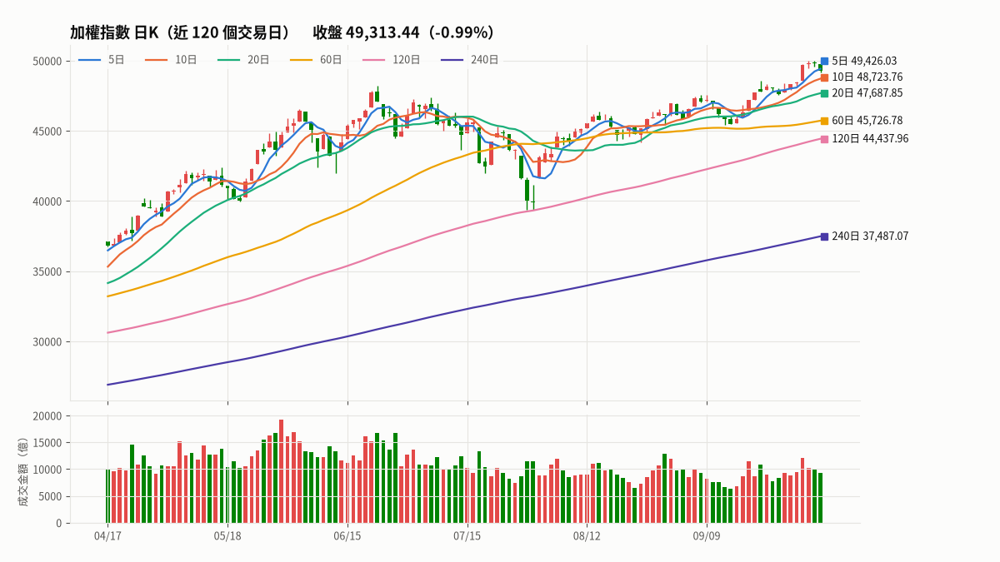
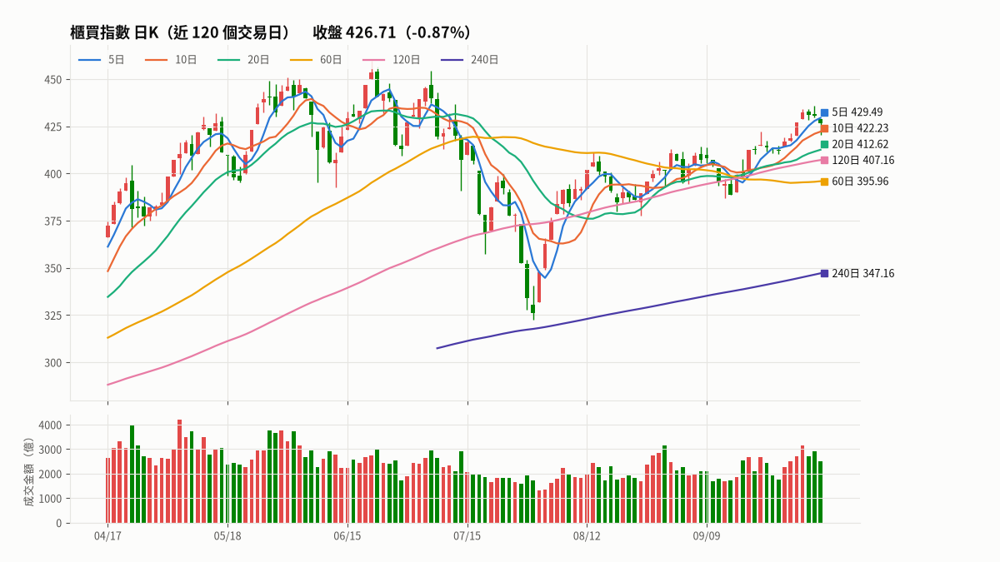

📈 盤勢解析 2026-10-08（四）
加權指數
49,313.44
-492.93（-0.99%）
櫃買指數
426.71
-3.75（-0.87%）
外資買賣超
-848.6 億
上市＋上櫃
三大法人
-983.8 億
上市＋上櫃
P/C 未平倉比
80.2%
前一天 82.2%
外資台指期
-83,194 口
比前一天 -4,093
資料日期：指數 10/08｜法人 10/08｜期交所 10/08｜產業 10/08
💤 今天（10/09）休市，以下是最近一個交易日的盤勢
今日總結
- 加權指數：49,313.44（-0.99%）；在 10、20、60、120、240 日線之上，5 日線之下；價跌量平；跌破 5日線（週線） 49,426.03，下一個支撐是 10日線（雙週線） 48,723.76（距離 1.2%）
- 櫃買指數：426.71（-0.87%）；在 10、20、60、120、240 日線之上，5 日線之下；價跌量平；跌破 5日線（週線） 429.49，下一個支撐是 10日線（雙週線） 422.23（距離 1.1%）
- 外資：現貨賣超 848.6 億、台指期淨未平倉減少 4,093 口（現貨期貨同方向，偏空）
- 選擇權 P/C 未平倉比 80.2%，前一天 82.2%
- 資金流入：半導體業、塑膠工業、玻璃陶瓷；流出：光電業、電子零組件業、電機機械
加權指數 49,313.44 ▼492.93（-0.99%）

日K：中黑K（開 49,783.06｜高 49,783.06｜低 49,189.77｜收 49,313.44）
量能：成交金額 9,245 億，是前 5 日平均的 0.92 倍（量平）→ 價跌量平
均線位置：在 10、20、60、120、240 日線之上，5 日線之下｜多頭排列（短天期均線在長天期之上）
漲跌家數：上漲 428｜下跌 546｜平盤 110（股票，不含 ETF）
關鍵支撐
- 跌破 5日線（週線） 49,426.03，下一個支撐是 10日線（雙週線） 48,723.76（距離 1.2%）
- 上方壓力：5日線（週線） 49,426.03（距離 0.2%）
| 均線 | 數值 | 收盤距離 | 均線方向 | 今天 |
|---|---|---|---|---|
| 5日線（週線） | 49,426.03 | -0.23% | ↗ 上揚 | 跌破（壓力） |
| 10日線（雙週線） | 48,723.76 | +1.21% | ↗ 上揚 | 在上方（支撐） |
| 20日線（月線） | 47,687.85 | +3.41% | ↗ 上揚 | 在上方（支撐） |
| 60日線（季線） | 45,726.78 | +7.84% | ↗ 上揚 | 在上方（支撐） |
| 120日線（半年線） | 44,437.96 | +10.97% | ↗ 上揚 | 在上方（支撐） |
| 240日線（年線） | 37,487.07 | +31.55% | ↗ 上揚 | 在上方（支撐） |
資料來源：證交所
櫃買指數 426.71 ▼3.75（-0.87%）

日K：小黑K、跳空下跌（缺口 428.67～429.72）、長下影線（下檔有買盤）（開 428.67｜高 428.67｜低 420.56｜收 426.71）
量能：成交金額 2,489 億，是前 5 日平均的 0.89 倍（量平）→ 價跌量平
均線位置：在 10、20、60、120、240 日線之上，5 日線之下｜均線交錯
漲跌家數：上漲 350｜下跌 414｜平盤 95（股票，不含 ETF）
關鍵支撐
- 跌破 5日線（週線） 429.49，下一個支撐是 10日線（雙週線） 422.23（距離 1.1%）
- 到關鍵支撐：盤中回測 10日線（雙週線） 422.23，收盤守住
- 上方壓力：5日線（週線） 429.49（距離 0.6%）
| 均線 | 數值 | 收盤距離 | 均線方向 | 今天 |
|---|---|---|---|---|
| 5日線（週線） | 429.49 | -0.65% | ↗ 上揚 | 跌破（壓力） |
| 10日線（雙週線） | 422.23 | +1.06% | ↗ 上揚 | 回測有撐（支撐） |
| 20日線（月線） | 412.62 | +3.42% | ↗ 上揚 | 在上方（支撐） |
| 60日線（季線） | 395.96 | +7.77% | ↗ 上揚 | 在上方（支撐） |
| 120日線（半年線） | 407.16 | +4.80% | ↗ 上揚 | 在上方（支撐） |
| 240日線（年線） | 347.16 | +22.92% | ↗ 上揚 | 在上方（支撐） |
資料來源：櫃買中心
三大法人買賣超（億元，10/08）
| 外資 | 投信 | 自營商 | 合計 | |
|---|---|---|---|---|
| 上市 | -758.5 | +46.9 | -187.3 | -899.0 |
| 上櫃 | -90.1 | +5.0 | +0.2 | -84.9 |
| 上市＋上櫃 | -848.6 | +51.9 | -187.1 | -983.8 |
上市外資連賣 3 天；近 5 日上市外資合計 -210.4 億、三大法人 -450.7 億
期貨與選擇權（10/08）
| 台指期 | 淨未平倉（口） | 比前一天 |
|---|---|---|
| 外資 | -83,194 | -4,093 |
| 投信 | +76,339 | +71 |
| 自營商 | -534 | +1,719 |
| 三大法人 | -7,389 | -2,303 |
- P/C 未平倉比 80.2%，前一天 82.2%，5 日平均 86.1%；成交量比 87.1%
- 外資買權淨未平倉 +47 口（比前一天 +195），金額 -2.09 億
- 外資賣權淨未平倉 +2,765 口（比前一天 +900），金額 +0.63 億
- 買權最大未平倉（10 月合約）：50,000，1,455 口（上檔壓力參考）
- 賣權最大未平倉（10 月合約）：46,000，1,376 口（下檔支撐參考）
資金流向：產業成交比重（10/08，和前 5 日平均比較）
流入
| 產業 | 成交比重 | 比重增減 | 族群漲跌 | 成交值（億） | 法人買賣超（億） | 成交值最大 |
|---|---|---|---|---|---|---|
| 半導體業 | 39.5% | +3.9 | -0.5% | 4,354 | -520.2 | 台積電、聯發科 |
| 塑膠工業 | 4.6% | +2.0 | +2.8% | 502 | -9.4 | 南亞、台塑 |
| 玻璃陶瓷 | 0.9% | +0.7 | -2.7% | 104 | -5.8 | 台玻、中釉 |
| 電腦及週邊設備業 | 5.4% | +0.2 | -0.4% | 592 | -37.4 | 奇鋐、緯創 |
| 油電燃氣業 | 0.4% | +0.2 | +3.2% | 48 | +0.2 | 台塑化、台汽電 |
流出
| 產業 | 成交比重 | 比重增減 | 族群漲跌 | 成交值（億） | 法人買賣超（億） | 成交值最大 |
|---|---|---|---|---|---|---|
| 光電業 | 4.9% | -3.5 | -1.8% | 544 | -55.7 | 大立光、友達 |
| 電子零組件業 | 27.7% | -2.4 | +0.2% | 3,056 | -11.3 | 國巨*、華新科 |
| 電機機械 | 1.0% | -0.6 | -0.2% | 110 | -17.9 | 亞德客-KY、高力 |
| 通信網路業 | 4.2% | -0.6 | -1.3% | 460 | -1.5 | 智邦、聯亞 |
| 其他電子業 | 4.8% | -0.2 | -0.3% | 530 | -71.8 | 鴻海、雙鴻 |
法人買賣超最多的產業
| 買超 | 億 | 賣超 | 億 |
|---|---|---|---|
| 紡織纖維 | +7.0 | 半導體業 | -520.2 |
| 食品工業 | +5.8 | 其他電子業 | -71.8 |
| 水泥工業 | +5.3 | 光電業 | -55.7 |
| 鋼鐵工業 | +4.5 | 電腦及週邊設備業 | -37.4 |
| 建材營造 | +2.7 | 金融保險 | -28.5 |
全部產業
| 產業 | 成交比重 | 比重增減 | 族群漲跌 | 成交值（億） | 法人買賣超（億） | 成交值最大 |
|---|---|---|---|---|---|---|
| 半導體業 | 39.5% | +3.9 | -0.5% | 4,354 | -520.2 | 台積電、聯發科 |
| 塑膠工業 | 4.6% | +2.0 | +2.8% | 502 | -9.4 | 南亞、台塑 |
| 玻璃陶瓷 | 0.9% | +0.7 | -2.7% | 104 | -5.8 | 台玻、中釉 |
| 電腦及週邊設備業 | 5.4% | +0.2 | -0.4% | 592 | -37.4 | 奇鋐、緯創 |
| 油電燃氣業 | 0.4% | +0.2 | +3.2% | 48 | +0.2 | 台塑化、台汽電 |
| 金融保險 | 1.6% | +0.1 | -1.7% | 176 | -28.5 | 富邦金、國泰金 |
| 紡織纖維 | 0.2% | +0.1 | +2.2% | 27 | +7.0 | 儒鴻、新纖 |
| 電子通路業 | 0.5% | +0.1 | +0.6% | 53 | +0.4 | 文曄、大聯大 |
| 汽車工業 | 0.3% | +0.1 | -1.4% | 30 | -0.1 | 艾姆勒、巨鎧精密-創 |
| 航運業 | 0.5% | +0.0 | +0.1% | 54 | -0.3 | 長榮、陽明 |
| 數位雲端 | 0.1% | +0.0 | +2.1% | 11 | +1.3 | 宏碁資訊、智通* |
| 綠能環保 | 0.3% | +0.0 | -4.4% | 31 | -4.4 | 聯友金屬-創、兆聯實業 |
| 水泥工業 | 0.1% | +0.0 | +0.9% | 13 | +5.3 | 台泥、亞泥 |
| 橡膠工業 | 0.1% | +0.0 | +1.0% | 6 | +0.9 | 台橡、南港 |
| 資訊服務業 | 0.1% | +0.0 | +2.5% | 15 | +1.2 | 大綜、精誠 |
| 運動休閒 | 0.1% | +0.0 | +0.5% | 9 | +2.3 | 寶成、巨大 |
| 觀光餐旅 | 0.0% | +0.0 | +1.0% | 3 | +1.1 | 王品、雄獅 |
| 農業科技業 | 0.0% | +0.0 | +7.6% | 1 | +0.0 | 瑞基、惠光 |
| 貿易百貨 | 0.1% | +0.0 | +0.3% | 6 | +2.0 | 統一超、潤泰全 |
| 存託憑證 | 0.0% | +0.0 | -0.1% | 2 | -0.6 | 泰金寶-DR、美德醫療-DR |
| 居家生活 | 0.0% | -0.0 | -0.3% | 3 | -0.6 | 寶雅*、億豐 |
| 食品工業 | 0.1% | -0.0 | +0.3% | 11 | +5.8 | 統一、聯華 |
| 建材營造 | 0.1% | -0.0 | +0.5% | 11 | +2.7 | 興富發、國產 |
| 造紙工業 | 0.0% | -0.0 | -0.3% | 1 | +0.1 | 正隆、永豐餘 |
| 電器電纜 | 0.1% | -0.0 | -1.3% | 15 | -4.1 | 華新、風青 |
| 生技醫療業 | 0.5% | -0.0 | +0.4% | 59 | -2.1 | 藥華藥、漢達 |
| 化學工業 | 1.0% | -0.1 | +2.0% | 107 | +1.1 | 永光、和桐 |
| 文化創意業 | 0.1% | -0.1 | +1.3% | 9 | +2.1 | 鈊象、智崴 |
| 鋼鐵工業 | 0.2% | -0.1 | +0.1% | 19 | +4.5 | 大成鋼、中鋼 |
| 其他 | 0.4% | -0.1 | +0.6% | 44 | -2.7 | 天品、世紀* |
| 其他電子業 | 4.8% | -0.2 | -0.3% | 530 | -71.8 | 鴻海、雙鴻 |
| 通信網路業 | 4.2% | -0.6 | -1.3% | 460 | -1.5 | 智邦、聯亞 |
| 電機機械 | 1.0% | -0.6 | -0.2% | 110 | -17.9 | 亞德客-KY、高力 |
| 電子零組件業 | 27.7% | -2.4 | +0.2% | 3,056 | -11.3 | 國巨*、華新科 |
| 光電業 | 4.9% | -3.5 | -1.8% | 544 | -55.7 | 大立光、友達 |
怎麼判斷的（定義與限制）
- 支撐／壓力：均線在收盤價下方是支撐、上方是壓力。均線：5、10、20、60、120、240 日。
- 到關鍵支撐：盤中最低價碰到均線、收盤守在均線之上（回測有撐），或收盤在均線上方 1.0% 以內（接近支撐）。前一天收在均線之上、今天收在均線之下是「跌破」。
- 日K：實體（收盤與開盤的差）≥ 前一天收盤的 1.0% 是長紅／長黑，一半以上是中紅／中黑；實體小於當天高低差的 10% 是十字線；影線超過當天高低差一半、而且夠長才算長上／下影線。
- 量能：成交金額和前 5 日平均比較，1.2 倍以上是量增、0.8 倍以下是量縮。上市用證交所公布的成交金額，上櫃用個股成交金額加總（含 ETF）。
- 資金流向：各產業成交值占全部股票（不含 ETF）成交值的比重，和前 5 日平均比較；族群漲跌依成交值加權；產業的法人買賣超是個股三大法人買賣超張數 × 收盤價估算，和官方金額會有些差異。
- P/C 比：臺指選擇權賣權未平倉 ÷ 買權未平倉。常見解讀是高於 100% 代表下檔賣權（支撐）較多，但解讀方式不只一種，請和其他指標一起看。最大未平倉履約價只是籌碼集中的價位，不保證有撐有壓。
- 均線支撐是很多人觀察的價位，不代表一定守得住；以上都是盤後依固定規則整理，不是投資建議。
※ 依固定規則整理的盤後資料，不是投資建議；均線支撐、P/C 比都只是參考價位與指標